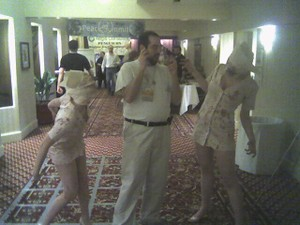

FADE IN around a serious-looking group of uniformed military officers. At the head of the table, a senior, heavy-set man, GENERAL FRED, speaks.
GENERAL FRED: The reports are confirmed. New York has been overrun... by zombies.
COLONEL TODD: Again? But we just had a zombie invasion 28 days ago!
GENERAL FRED: These zombies... are different. They're... philosophical zombies.
CAPTAIN MUDD: Are they filled with rage, causing them to bite people?
COLONEL TODD: Do they lose all capacity for reason?
GENERAL FRED: No. They behave... exactly like we do... except that they're not conscious.
(Silence grips the table.)
COLONEL TODD: Dear God.
GENERAL FRED moves over to a computerized display.
GENERAL FRED: This is New York City, two weeks ago.
The display shows crowds bustling through the streets, people eating in restaurants, a garbage truck hauling away trash.
GENERAL FRED: This... is New York City... now.
The display changes, showing a crowded subway train, a group of students laughing in a park, and a couple holding hands in the sunlight.
COLONEL TODD: It's worse than I imagined.
CAPTAIN MUDD: How can you tell, exactly?
COLONEL TODD: I've never seen anything so brutally ordinary.
A lab-coated SCIENTIST stands up at the foot of the table.
SCIENTIST: The zombie disease eliminates consciousness without changing the brain in any way. We've been trying to understand how the disease is transmitted. Our conclusion is that, since the disease attacks dual properties of ordinary matter, it must, itself, operate outside our universe. We're dealing with an epiphenomenal virus.
GENERAL FRED: Are you sure?
SCIENTIST: As sure as we can be in the total absence of evidence.
GENERAL FRED: All right. Compile a report on every epiphenomenon ever observed. What, where, and who. I want a list of everything that hasn't happened in the last fifty years.
CAPTAIN MUDD: If the virus is epiphenomenal, how do we know it exists?
SCIENTIST: The same way we know we're conscious.
CAPTAIN MUDD: Oh, okay.
GENERAL FRED: Have the doctors made any progress on finding an epiphenomenal cure?
SCIENTIST: They've tried every placebo in the book. No dice. Everything they do has an effect.
GENERAL FRED: Have you brought in a homeopath?
SCIENTIST: I tried, sir! I couldn't find any!
GENERAL FRED: Excellent. And the Taoists?
SCIENTIST: They refuse to do anything!
GENERAL FRED: Then we may yet be saved.
COLONEL TODD: What about David Chalmers? Shouldn't he be here?
GENERAL FRED: Chalmers... was one of the first victims.
COLONEL TODD: Oh no.
(Cut to the INTERIOR of a cell, completely walled in by reinforced glass, where DAVID CHALMERS paces back and forth.)
DOCTOR: David! David Chalmers! Can you hear me?
CHALMERS: Yes.
NURSE: It's no use, doctor.
CHALMERS: I'm perfectly fine. I've been introspecting on my consciousness, and I can't detect any difference. I know I would be expected to say that, but—
The DOCTOR turns away from the glass screen in horror.
DOCTOR: His words, they... they don't mean anything.
CHALMERS: This is a grotesque distortion of my philosophical views. This sort of thing can't actually happen!
DOCTOR: Why not?
NURSE: Yes, why not?
CHALMERS: Because—
(Cut to two POLICE OFFICERS, guarding a dirt road leading up to the imposing steel gate of a gigantic concrete complex. On their uniforms, a badge reads "BRIDGING LAW ENFORCEMENT AGENCY".)
OFFICER 1: You've got to watch out for those clever bastards. They look like humans. They can talk like humans. They're identical to humans on the atomic level. But they're not human.
OFFICER 2: Scumbags.
The huge noise of a throbbing engine echoes over the hills. Up rides the MAN on a white motorcycle. The MAN is wearing black sunglasses and a black leather business suit with a black leather tie and silver metal boots. His white beard flows in the wind. He pulls to a halt in front of the gate.
The OFFICERS bustle up to the motorcycle.
OFFICER 1: State your business here.
MAN: Is this where you're keeping David Chalmers?
OFFICER 2: What's it to you? You a friend of his?
MAN: Can't say I am. But even zombies have rights.
OFFICER 1: All right, buddy, let's see your qualia.
MAN: I don't have any.
OFFICER 2 suddenly pulls a gun, keeping it trained on the MAN. OFFICER 2: Aha! A zombie!
OFFICER 1: No, zombies claim to have qualia.
OFFICER 2: So he's an ordinary human?
OFFICER 1: No, they also claim to have qualia.
The OFFICERS look at the MAN, who waits calmly.
OFFICER 2: Um...
OFFICER 1: Who are you?
MAN: I'm Daniel Dennett, bitches.
Seemingly from nowhere, DENNETT pulls a sword and slices OFFICER 2's gun in half with a steely noise. OFFICER 1 begins to reach for his own gun, but DENNETT is suddenly standing behind OFFICER 1 and chops with a fist, striking the junction of OFFICER 1's shoulder and neck. OFFICER 1 drops to the ground.
OFFICER 2 steps back, horrified.
OFFICER 2: That's not possible! How'd you do that?
DENNETT: I am one with my body.
DENNETT drops OFFICER 2 with another blow, and strides toward the gate. He looks up at the imposing concrete complex, and grips his sword tighter.
DENNETT (quietly to himself): There is a spoon.
(Cut back to GENERAL FRED and the other military officials.)
GENERAL FRED: I've just received the reports. We've lost Detroit.
CAPTAIN MUDD: I don't want to be the one to say "Good riddance", but—
GENERAL FRED: Australia has been... reduced to atoms.
COLONEL TODD: The epiphenomenal virus is spreading faster. Civilization itself threatens to dissolve into total normality. We could be looking at the middle of humanity.
CAPTAIN MUDD: Can we negotiate with the zombies?
GENERAL FRED: We've sent them messages. They sent only a single reply.
CAPTAIN MUDD: Which was...?
GENERAL FRED: It's on its way now.
An orderly brings in an envelope, and hands it to GENERAL FRED.
GENERAL FRED opens the envelope, takes out a single sheet of paper, and reads it.
Silence envelops the room.
CAPTAIN MUDD: What's it say?
GENERAL FRED: It says... that we're the ones with the virus.
(A silence falls.)
COLONEL TODD raises his hands and stares at them.
COLONEL TODD: My God, it's true. It's true. I...
(A tear rolls down COLONEL TODD's cheek.)
COLONEL TODD: I don't feel anything.
The screen goes black.
The sound goes silent.
The movie continues exactly as before.
 PS: This is me being attacked by zombie nurses at Penguicon.
Only at a combination science fiction and open-source convention would it be possible to attend a session on knife-throwing, cry "In the name of Bayes, die!", throw the knife, and then have a fellow holding a wooden shield say, "Yes, but how do you determine the prior for where the knife hits?"
{kind=link}